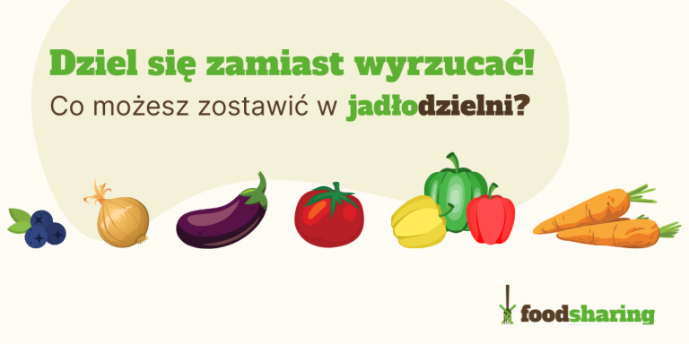
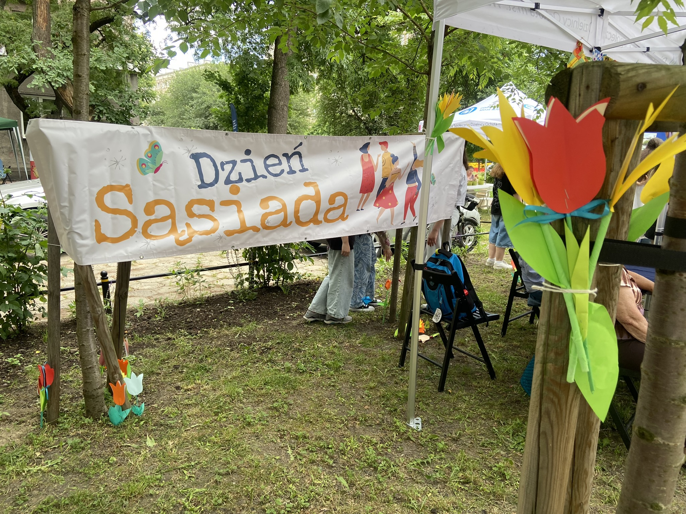

Edukujemy
Prowadzimy warsztaty i bierzemy udział w spotkaniach poświęconych niemarnowaniu jedzenia. Jesteśmy otwarci na współpracę.

Pełnowartościowe jedzenie może trafić do ludzi zamiast do kosza. Razem ratujemy żywność, dzielimy się nią i tworzymy miejsca dostępne dla każdego.
Dobro wraca. Jedzenie też może krążyć.Ratujemy żywność przed zmarnowaniem. Zachęcamy do dzielenia się jedzeniem wszystkich ze wszystkimi i budujemy poczucie odpowiedzialności za ograniczenie marnowania.
Prowadzimy warsztaty i bierzemy udział w spotkaniach poświęconych niemarnowaniu jedzenia. Jesteśmy otwarci na współpracę.
Działamy jako wolontariusze. Nie pobieramy opłat za pozyskane jedzenie — dzielimy się nim i dostarczamy je do jadłodzielni.
Tworzymy przestrzenie, w których każdy może zostawić żywność dobrą do spożycia lub bezpłatnie się nią poczęstować.
Jadłodzielnia to oznaczona lodówka lub szafka. Możesz przynieść do niej jedzenie, którego nie wykorzystasz, albo wziąć to, czego potrzebujesz.
Znajdź punkt w WarszawiePrzynieś produkty, które sam mógłbyś bez obaw zjeść. Zapakuj je szczelnie i zadbaj o opis domowych wyrobów.
Możesz podzielić się nadwyżką albo po prostu poczęstować się jedzeniem. Korzystanie z jadłodzielni jest bezpłatne.
Nie zostawiaj produktów ze śladami zepsucia ani takich, co do których bezpieczeństwa masz wątpliwości.
Jadłodzielnia jest dla wszystkich.
Możesz przynieść jedzenie. Możesz je zabrać. Możesz zrobić jedno i drugie.
Zobacz lokalną stronę, sprawdź adresy jadłodzielni i dowiedz się, co dzieje się w Twojej okolicy.
Adresy jadłodzielni, zasady i warszawska społeczność.
Jeśli myślisz o stworzeniu miejsca do dzielenia się jedzeniem, napisz do nas. Pomożemy Ci zacząć.
nowajadlodzielnia@foodsharing.pl ↗Foodsharing wychodzi w miasto i spotyka się z mieszkańcami podczas wydarzeń.
Czytaj więcej ↗
PoradnikJak korzystać z jadłodzielni i co można zostawić dla innych?
Czytaj więcej ↗
SpołecznośćSpotkanie i okazja do rozmowy o niemarnowaniu jedzenia.
Czytaj więcej ↗Chcesz podzielić się jedzeniem, współpracować lub dowiedzieć się więcej? Zacznij od swojej lokalnej społeczności albo napisz do nas.